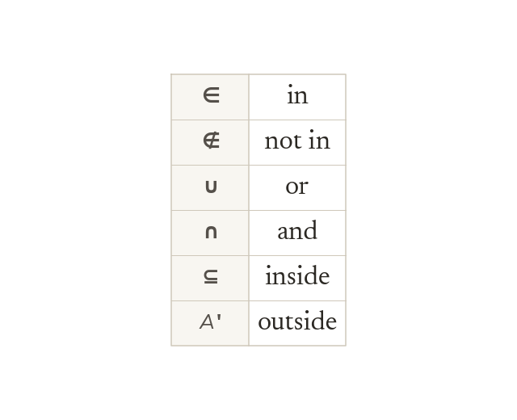

Union
A ∪ B is every element in A, in B, or in both. List each element only once.
A union B, written A ∪ B, is every element that is in A, in B, or in both - each element listed only once even if it's in both sets.
Yesterday you compared one set to another (subset) and to everything outside it (complement). Today you combine two sets: put everything from both together (union), or find just what they share (intersection).
Work down the page at your own pace. Write every answer in your book first, then click to check it.
Read each card, then follow the worked examples one step at a time.
A ∪ B is every element in A, in B, or in both. List each element only once.

The union count is n(A) + n(B) - n(A ∩ B). Adding n(A) and n(B) counts the overlap twice.
Pick an answer. If it's wrong, the feedback tells you which mistake it was.
Read each card, then follow the worked examples one step at a time.

A ∩ B is every element in both A and B. Sets that share nothing are disjoint: A ∩ B = ∅.

∈ and ∉ describe single elements. ∪ and ∩ combine two sets. ⊆ and ' compare sets.
Pick an answer. If it's wrong, the feedback tells you which mistake it was.
Finished? Next lesson: 7.2.4 Building Venn Diagrams.
Log in, then search for a code to practise that skill.
Videos, worksheets and more on each part of this lesson.